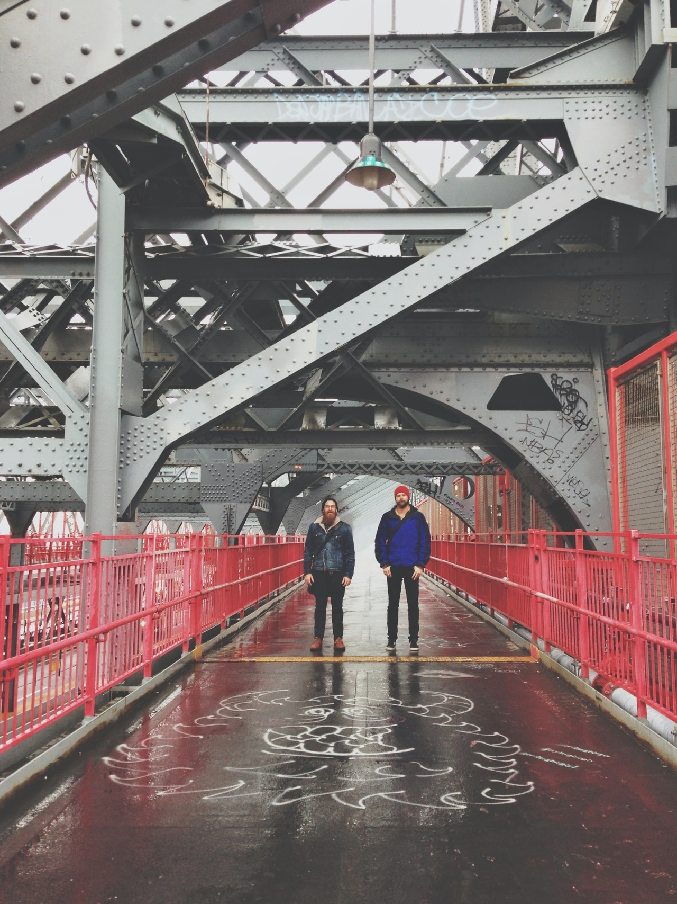
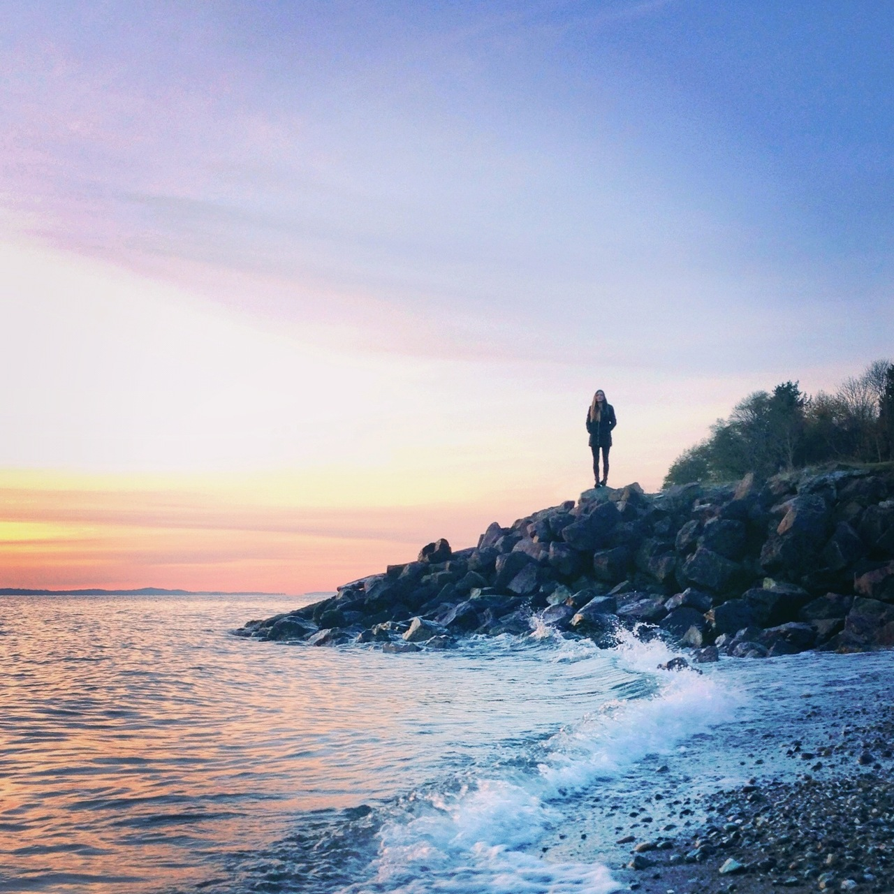
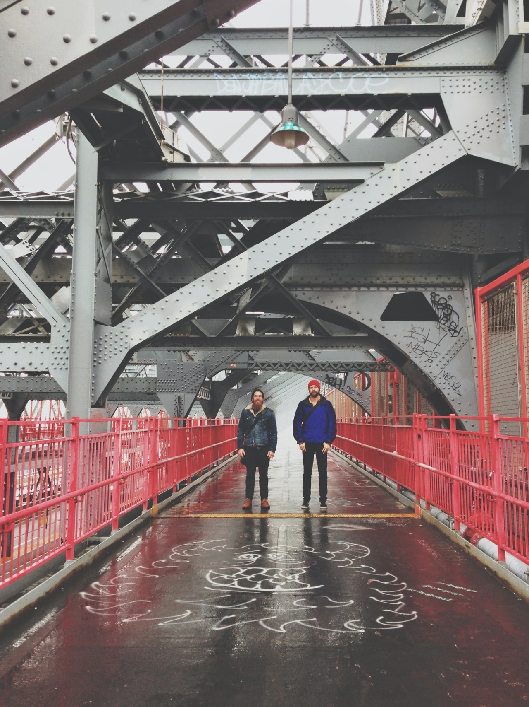
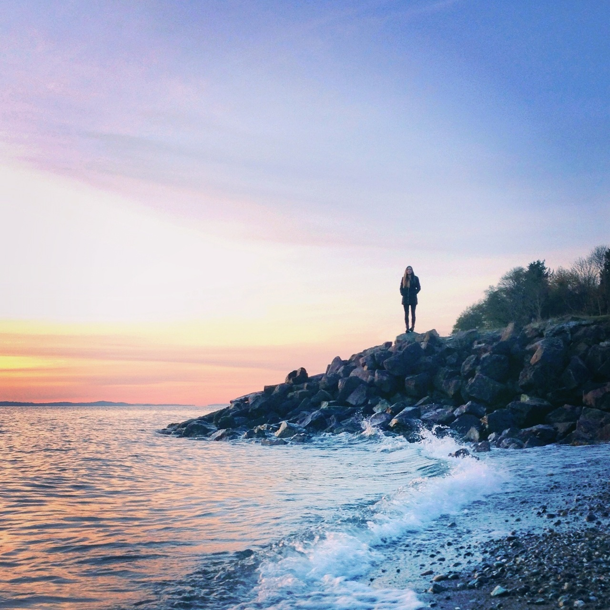

WITHHEARTS
Rich with color and strong composition Cory Staudacher’s Instagram shots are always inspiring. See more of his work on his newly updated Tumblr blog (using Cadence) at blog.withheartsablaze.com.


Rich with color and strong composition Cory Staudacher’s Instagram shots are always inspiring. See more of his work on his newly updated Tumblr blog (using Cadence) at blog.withheartsablaze.com.